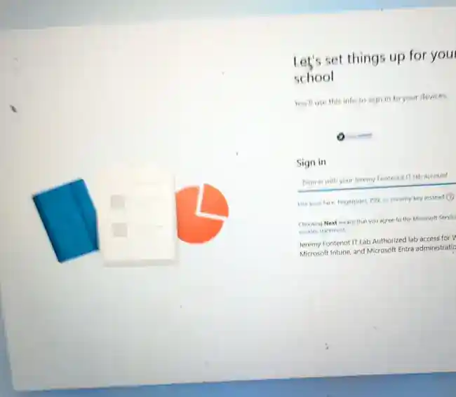
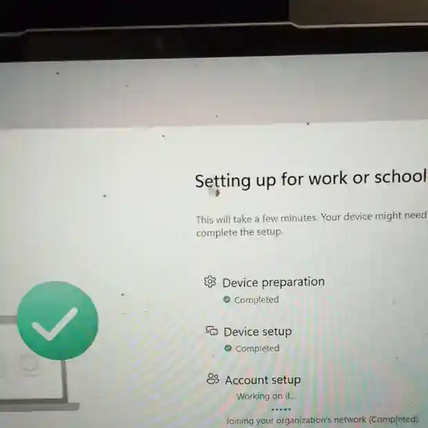
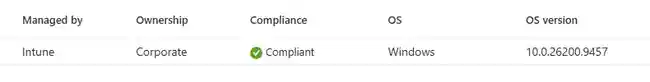
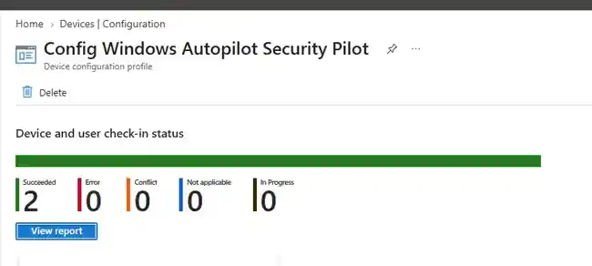

Autopilot OOBE
Tenant-branded work/school sign-in proves the registered device retrieved the Autopilot experience.
{kind=link}

M365 Lab Project 01 · COMPLETE
Sanitized proof from the live OOBE, Enrollment Status Page, compliance remediation, and post-enrollment security validation.
Tenant-branded work/school sign-in proves the registered device retrieved the Autopilot experience.

Device preparation and setup progressed through the configured ESP workflow.

Intune initially identified BitLocker and Secure Boot as not compliant. Endpoint checks isolated Secure Boot as the real firmware gap.

After Secure Boot remediation and Intune synchronization, the corporate device reported Compliant.

The Windows security configuration profile reported two successes with zero errors, conflicts, not-applicable results, or in-progress assignments.

Sanitized endpoint evidence confirms Entra join, Intune enrollment tasks, Microsoft 365 Apps, BitLocker, Defender, Firewall, VBS, and Secure Boot.
{kind=link}
{kind=link}
{kind=link}